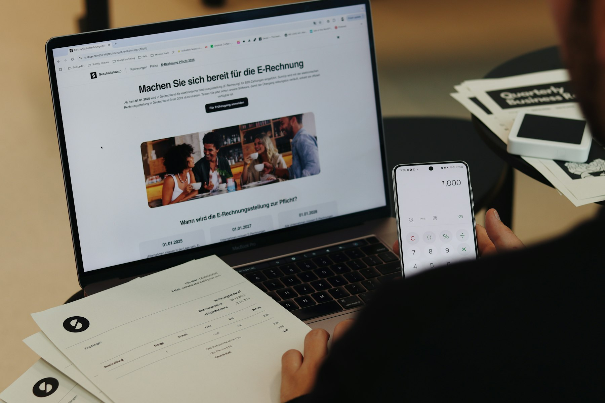
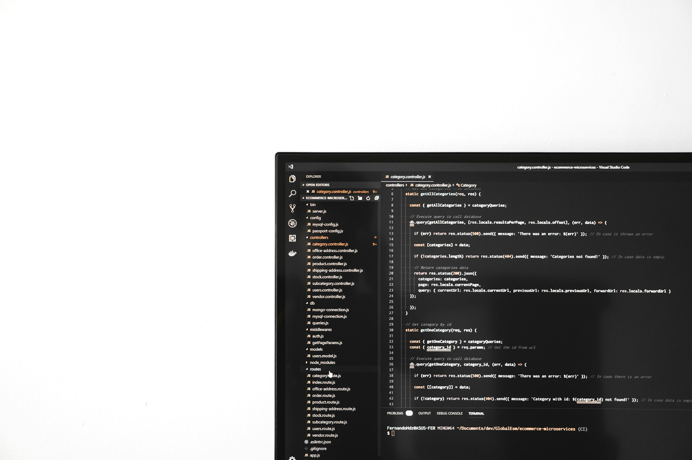

TL;DR
Short daily check-ins can help you manage change effectively, while avoiding common pitfalls like rigid plans and stress reactions is essential for maintaining productivity.
Who Faces Constant Change and Why It Matters

Mid-career professionals often find themselves in environments marked by continuous project shifts, team reorganization, or technological updates. According to a recent survey by Gallup, 70% of employees report feeling overwhelmed by constant changes at work, which can result in a 50% decrease in productivity.
Everyday scenarios range from adjusting to new project management tools to changing team members due to turnover. These fluctuations can lead to anxiety and a lack of direction, reinforcing feelings of helplessness.
Recognizing the significant impact of these dynamics is the first step toward mastering productivity amid change.
The Pitfalls of Common Approach to Change Management

Many professionals default to a rigid, one-size-fits-all strategy when facing change, believing that sticking to a predetermined plan will mitigate the impact. However, this approach often backfires.
For instance, over 60% of organizations report that strict adherence to project timelines without accounting for team dynamics leads to burnout and failure to meet objectives. Ignoring individual work styles only exacerbates the issue, as employees may feel alienated or unmotivated.
Additionally, most change management frameworks fail to address the mental load changes impose, leaving workers vulnerable to decision fatigue. Instead of fostering flexibility, this rigidity creates roadblocks, amplifying stress and disengagement.
Implementing Routine Check-Ins: A 5-Minute Daily Practice
One of the most effective methods for navigating constant change is instituting brief daily check-ins, which can pivotally enhance focus and productivity. Allocate just five minutes each morning to assess your priorities. Start by asking questions like:
- What are my top three goals for today?
- How will I measure success by the end of the day?
- What challenges might I face?
Tracking responses can guide your actions throughout the day, and the expected outcome is a laser-like focus on key priorities. Ideally, this practice can lead to a 20% increase in task completion rates, translating to several hours saved per week.
Schedule these check-ins right at the start of your workday. When teams adopt this communal practice, it cultivates a culture of accountability that can buffer the friction caused by changes.
Mini-Case Study: Successfully Navigating Change at XYZ Corp
At XYZ Corp, a technology firm, a significant reorganization rocked the project teams and altered reporting lines. Instead of resisting this change, management introduced a proactive communication strategy.
Weekly team meetings, led by managers who openly acknowledged the difficulties, set a tone of transparency. The challenge was to maintain project deadlines amidst resource realignment.
When a key developer left, the team faced a potential two-month delay. However, by reallocating tasks and introducing peer mentorship, they not only met the deadline but improved team cohesion.
Employees reported an increase in collaboration by 35% post-change, illustrating how structured approaches can transform adversity into growth, showcasing vital lessons: open communication and adaptability are paramount.
Common Mistakes When Handling Change and How to Avoid Them
Handling workplace change is fraught with pitfalls. One common mistake is the immediate emotional reaction—complaining about change rather than assessing its implications. Research indicates that teams acknowledging frustration are 40% more productive than those who suppress it.
Another error is neglecting to redefine roles; failing to clarify responsibilities during transitions often results in confusion and overlap. A study found that unassigned roles during change lead to 70% slower task completion.
To avoid these traps, actively engage in reassessing your position, communicate openly with peers about changes, and create a structured approach to relaying these discussions within your team.
Ultimately, not correcting these mistakes wastes time and depletes morale.
Quick Decision Checklist: Staying Productive Amidst Change
To thrive amidst constant change, consider this quick decision checklist:
- Does this new project align with my core responsibilities?
- How will I evaluate success—by week or month?
- What immediate resources are needed, and are they available?
- Have I communicated my concerns and expectations with my team?
- What is my contingency plan if this change fails?
Review this checklist at the beginning of each week, adjusting as necessary based on evolving priorities. The action items should keep you focused, allowing you to prioritize what truly matters. Notably, keeping this checklist handy not only directs your focus but also minimizes mental clutter, paving the way for sustained productivity over time.
FAQ
How can I maintain productivity during uncertain times at work?
Establish short daily check-ins to prioritize tasks, clarify responsibilities, and communicate openly with your team to enhance focus and mitigate anxiety.
What are some quick strategies for adapting to unexpected changes?
Utilize a checklist to evaluate new responsibilities, set measurable goals, and regularly revisit your progress to remain aligned with team objectives.
Continual adaptation requires practical strategies, not just theories.
Turn this into a workflow
Do not stop at ideas. Pick one workflow, test it for 14 days, then keep only what reduces friction.
Search more articles
Find related tools, workflows, and guides.
Photo credits
- Photo 1: SumUp via Unsplash
- Photo 2: Fernando Hernandez via Unsplash
- Photo 3: Pramod Tiwari via Unsplash
- Photo 4: Jeremy Kwok via Unsplash
- Photo 5: Caroline Andrade Rocha via Unsplash